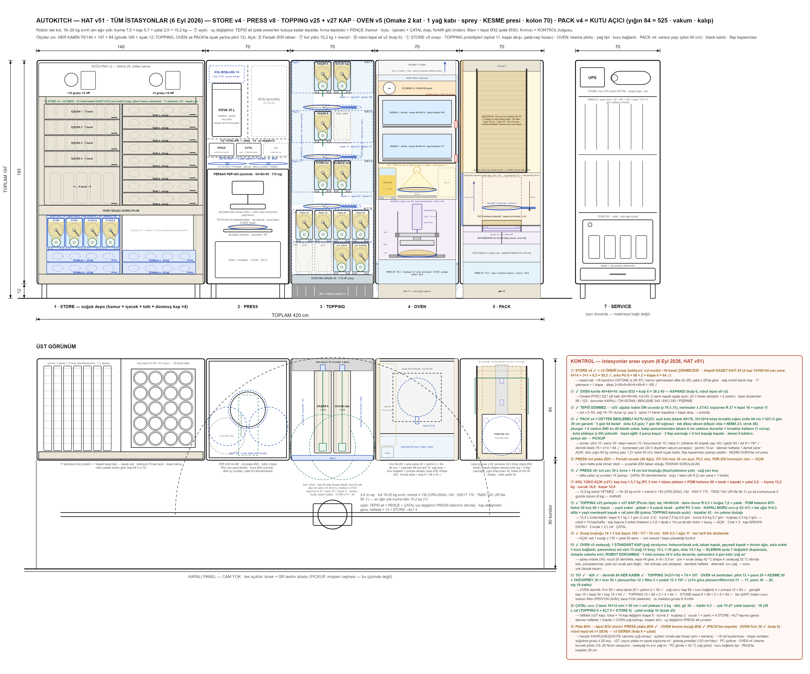

MAKİNE — hat + robot390 × 83 × 203 · HAT v19
HAT v19 yerleşimi: dört modül ve önlerinde iki sabit kobot. Ray YOK. Çekmeceler tek modülde tabanda (250 cm); PRESS ve TOPPING onun üstünde oturur. Her modül kendi rengiyle; tıklayınca o istasyonun sayfası açılır.
22 EYLÜL 2026
Bu sahne ölçü kutularıdır. Parçaları çizilmiş gerçek üretim modeli için: MAKİNE ANA MONTAJI · 3D / AR ↗ — orada beyaz olanlar gerçek model, şeffaf olanlar henüz kutu. Şu an üzerinde çalışılan istasyon: 3 · TOPPING.
Bu sahne ölçü kutularıdır. Parçaları çizilmiş gerçek üretim modeli için: MAKİNE ANA MONTAJI · 3D / AR ↗ — orada beyaz olanlar gerçek model, şeffaf olanlar henüz kutu. Şu an üzerinde çalışılan istasyon: 3 · TOPPING.
sürükle: döndür · üstüne gel: istasyon · tıkla: sayfası
1 · Ne yapar · çalışma senaryosu
Makine = dört modül + iki sabit kobot. Tabanda tek çekmece modülü (250 cm) var; PRESS ve TOPPING onun üstüne oturur. Bir pide için sıra: ÇEKMECE (hamur) → PRESS (açma) → TOPPING (kasetlerden dozaj) → OVEN (yağ, pişirme, kesme) → PACK (kutu) → teslim dolabı. Ürün tepsisiz akar, tabanını robot tutar. Malzeme ikmali (kaset doldurma, hamur, kutu) elemanın işidir; her şey 2 günlük.
- İki kobot yerinde sabit durur (ray yok); her modülün robot açıklığı o an açılır, soğuk kabinler kapalı kalır.
- Uç değiştirici: PENÇE (hamur, kutu, içecek) ve pide tabanını tutan el. Kaset taşıma robotun işi değil — kaseti eleman önden çeker.
- Kapasite: tam yükte 1 saatte çıkan ürün için HAT SEÇENEKLERİ sayfasındaki sim sonuçlarına bak (seçeneğe göre 26–58/saat).
2 · Özellikler · karar özeti
Modül standardıhepsi 83 derin, hat yüksekliği 203. A PRESS 70 · B ÇEKMECELER 250 (yük. 106) · C TOPPING 180 (B üstünde, 106–203) · D FIRIN 70 · E KUTULAMA 70Toplam hat390 × 83 × 203 cm. RAY YOK: iki kobot hattın önünde sabit (x 125 ve 320), erişimleri ortadaki aktarma rafında kesişirRobot2 × Fairino FR10 (erişim 140). FR5 (92) yetmiyor: R1 bölgesi 220 cm geniş. Kaide 82, omuz 100Tepsi zinciripide Ø30 → tepsi Ø32 + kulp 6; PRESS plaka Ø29, OVEN hazne 40 (38 ✓), PACK kalıp 32,5KontrolBEYİN (PICKUP panosunda): PLC I/O, fırın SSR + termokupl, kilit kartı, robot arayüzü; kiosk yalnız istemciKapalı panelcam yok; robot açıklıkları klape; eleman kapıları turuncu (dış görünüş v2)
3 · Teknik resimler


4 · Tedarikçiler · fiyatlar
| Tedarikçi / ürün | Ne | Fiyat / durum |
|---|---|---|
| Fanuc CRX-20iA/L | kobot 20 kg, menzil 1418 | teklif alınacak |
| Doosan H2017 | kobot 20 kg, menzil 1700 | teklif alınacak |
| Techman TM20 | kobot 20 kg, menzil 1300 | sınırda |
| 7. eksen ray | lineer ray 3 m, servo | entegratör |
| Entegratör | kabinler, klapeler, pano, devreye alma | teklif |
İstasyon bazlı tedarikçiler her istasyonun sayfasında.
5 · Soru işaretleri · açık konular
| # | Problem | Durum | Çözüm / not |
|---|---|---|---|
| ⑦ | Kol yükü 15,2 kg + menzil ≥ 142 — kobot sınıfı | AÇIK | CRX-20iA/L / H2017; ya da kıyma 2 günlük dolum (6 kg) |
| ⑫ | Robot tepsi eli v2 (kulp 6 + çatal) | AÇIK | çizilecek |
| ⑬ | Çatal ucu: 2 lama 16×12 × 50 + sırt plakası | ÖNERİ VAR | haftada ≈ 14 kap değişimi + 4 STORE→ALT |
| R-T2 | Sıcak tepsi ile uç | ÖNERİ VAR | kulp ısı köprüsü kesik, paslanmaz |
| G4 | Kalibrasyon kayması | ÖNERİ VAR | pim + kamera |
6 · Sürüm geçmişi
- HAT v19 (18 Eyl) · GEÇERLİ: 2 kol, ray yok, hat 390; çekmeceler tabanda tek modül, PRESS + TOPPING üstünde; fırın 3 hazne; TOPPING 6 kaset yuvası
- HAT v14–v18: 2 kol seçeneği, tabla/bant karşılaştırması, aktarma gözü (iptal)
- HAT v51 (6 Eyl): PACK v4 — eski 420 cm'lik tepsili hat
- HAT v50/v49: OVEN v5/v4 (kesme presi OVEN'e taşındı)
- HAT v48: OVEN v3, kolon 70, hat 420
- HAT v46–v47 (5 Eyl): TOPPING v25/v26, STORE v5 öneri, 8 ajanlı denetim
- HAT v44 (4 Eyl): tüm istasyonlar + KONTROL
- HAT v22–v43 (Ağu): yerleşim ve kabin standardı denemeleri